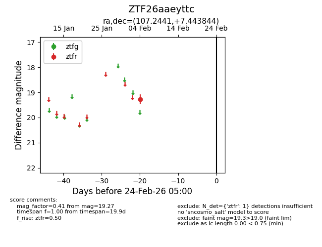
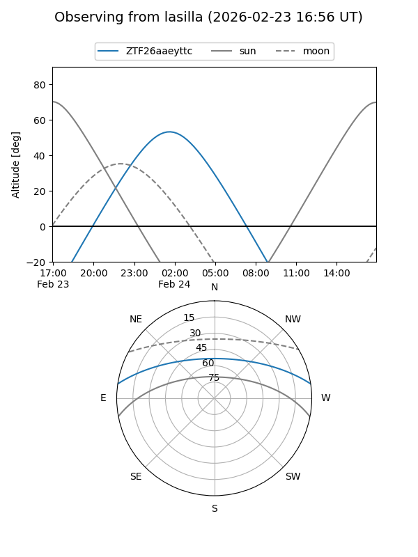
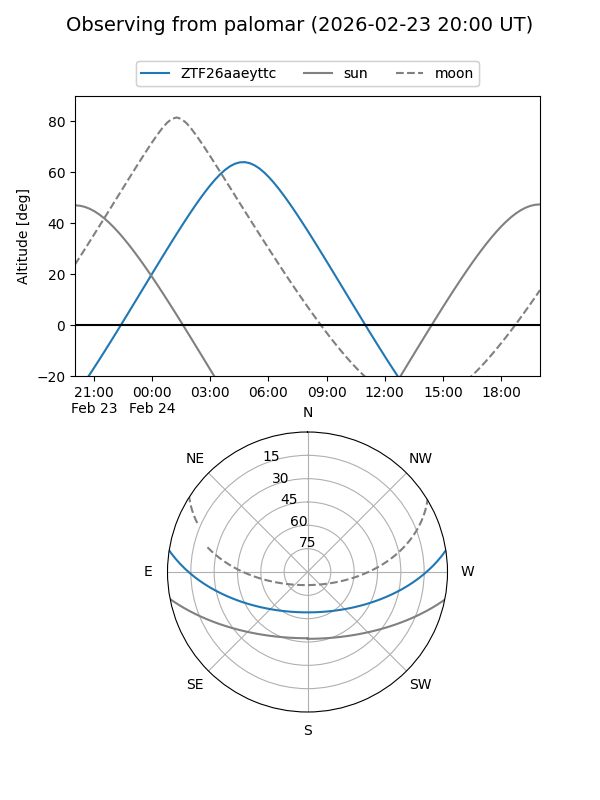

ZTF26aaeyttc
Target ZTF26aaeyttc at 2026-02-24 09:08
Aliases and brokers:
FINK: link
Lasair: link
ALeRCE: link
alt names
ZTF26aaeyttc (ztf,fink_ztf)
Coordinates:
equatorial (ra, dec) = 107.2441,+7.44384
equatorial (HMS+DMS) = 07:08:58.58,+07:26:37.84
galactic (l, b) = (208.2635,+7.26979)
Flags:
Photometry:
last ztfr=19.27
1 ztfr detections
Lightcurve

Visibility


Additional plots